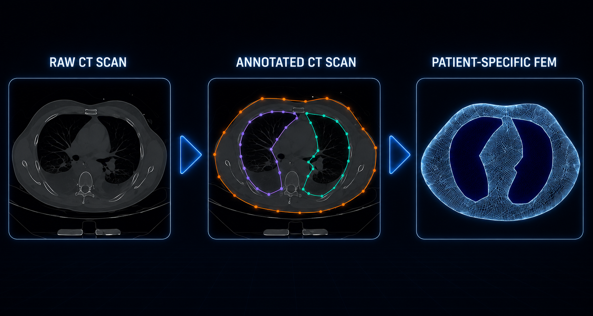
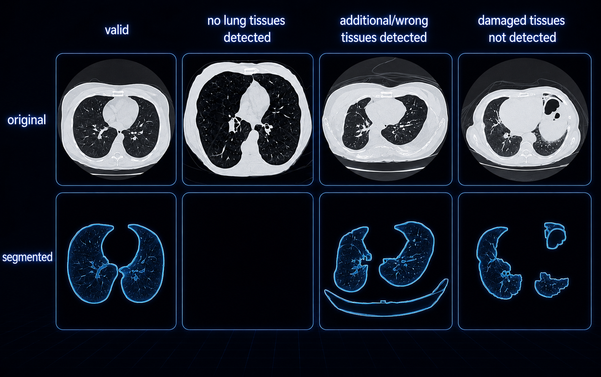

Engineering Expertise
Biomedical systems, computational modeling, clinical AI, signal intelligence, and production engineering
More than a decade translating medical images, physiological signals, biomechanics, and regulated MedTech requirements into validated algorithms, software, and product-ready systems.
Biomedical Systems & Biomechanical Modeling
Patient-Specific Biomedical Engineering

Anatomy-to-mechanics translation
CT-derived anatomy, three-dimensional morphology, finite-element modeling, and stress mapping support quantitative joint mechanics, implant design, and patient-specific planning.
Sports Biomechanics & Human Performance

Instrumented experimentation
Motion, electromyography, pressure, footwear, orthotics, fatigue, comfort, and performance studies connect controlled laboratory protocols with real-world human movement.
Orthopedic Kinematics & Joint Mechanics

Dynamic motion and contact biomechanics
Coordinate-system definition, dynamic CT analysis, joint kinematics, contact mechanics, and osteoarthritis characterization enable interpretable models of native, pathological, and reconstructed joints.
MedTech Sensing & Biomechanical Load Mapping

Wearables, pressure sensing, and device analytics
Spatial load distributions, digital biomarkers, wearables, implantables, and sensor-derived measurements connect human physiology and mechanics to actionable device and clinical insights.
Clinical AI, Signal Intelligence & Software Systems
Computer Vision & Image-Based Modeling

From images to computable anatomy
Two- and three-dimensional image-processing pipelines support annotation, segmentation, reconstruction, geometry extraction, quality optimization, and generation of patient-specific computational models.
Physiological Signal Processing & Digital Biomarkers

Time- and frequency-domain analytics
Denoising, event detection, feature engineering, spectral analysis, robustness testing, and physiological estimation support ECG, EIT, cardiac pressure, video, and multimodal sensor data.
Computational Software & Algorithm Pipelines

Validated algorithms in production-grade code
Python-based processing pipelines, reproducible experiments, automated quality checks, APIs, testing, CI/CD, and workflow tooling turn research algorithms into maintainable systems for regulated teams.
Deep Learning for Medical Imaging

Segmentation, reconstruction, and enhancement
CNN, RNN, and multi-scale architectures support automated segmentation, super-resolution, image-quality control, model robustness, and clinically grounded validation across heterogeneous imaging inputs.
Real-World Impact
Clinical, Device, and Performance Applications
Engineering expertise translates technical systems into tools that improve diagnosis, monitoring, treatment planning, device design, and performance optimization.
& Monitoring
Treatment Planning
Optimization
& Devices
Outcomes
Engineering Delivery Principles
Reliable, interpretable, deployable systems
Successful engineering work combines precise experimental design, validated computational models, reproducible data pipelines, explainable outputs, and integration into practical clinical or research workflows.